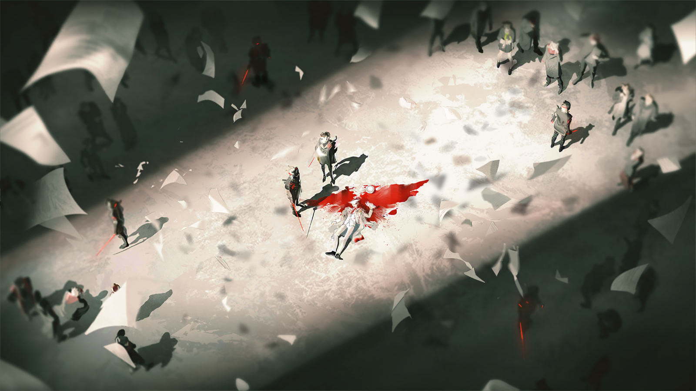

叶莉莎女大公
是叶甫根尼的人来过了，是吗？

瓦莲汀
已经被我打发走了。
叶莉莎女大公
看来，他还是没能看清。在他们之中有人能够献上费奥多尔的头颅前，一切承诺都只会停留在口头上。
叶莉莎女大公
不过，如今城中似乎也还有他们带来的那些“小尾巴”……
瓦莲汀
都在首都卫戍军团的视野之中。

叶莉莎女大公
你办事总是这样让人放心，亲爱的。
叶莉莎女大公
这段时间总是让你这样操劳……若不是为了尽早结束眼前这一切可悲的动乱，我又于心何忍呢？
叶莉莎女大公
像你这样漂亮的人儿啊，在这样的年纪，本该去尽情地享受舞会，还有那些美丽的风光。
叶莉莎女大公
我真是惋惜，你没有赶上这个国家的好时候……
瓦莲汀
……在我们已经达成共识的前提下，这些工作都是我的分内之事，我尊敬的殿下。

叶莉莎女大公
我听说，停工的范围似乎仍在不断扩大？香料市场已经全面停摆，即使是铁河区，也有近半数工厂和私人工坊停工。
叶莉莎女大公
照这个速度下去，不出一周，圣骏堡就会如这些敌人们所愿，变成一座“死城”。

瓦莲汀
“敌人”吗……看来，您已经将停工当作一场战争来看待。
叶莉萨维塔笑了一声。这声音很明显，在空阔的大厅中几乎有些突兀。她已经不再需要像往常那样不动声色。

叶莉莎女大公
我们一直身处战争之中，沃尔金娜公爵。
叶莉莎女大公
只是在圣骏堡外，我们争夺的是对权力正统的解释权；在圣骏堡内，我们争夺的是谁能让这座伟大的城市继续运转，不可露怯。

瓦莲汀
后者就是我正在做的事。而纳斯塔霞殿下近日来的所作所为……给我造成了很大的困扰。
叶莉莎女大公
我已经去见过她了。
瓦莲汀
殿下怎么说？
叶莉莎女大公
殿下只是想要让人们回到自己的位置上去。
瓦莲汀
……在毫不让步的情况下吗？
瓦莲汀
殿下想要从贵族和工厂主手中收回资源，统一调度，以便备战，因此对有些不识时务的家伙实施了惩戒，这些，我都能理解。
叶莉莎女大公
……
瓦莲汀
可两位对那些只是听令行事的工人们的态度，是否也过于严苛了呢？
瓦莲汀
他们之中已经有很多人因为在缺少防护的环境下加工精炼源石而感染了。剩下的那些，也只是在争取活下去的权利——

瓦莲汀
……
公爵本以为是自己的话语激怒了面前的长者，可她只是平和地，缓缓向自己走来。
叶莉莎女大公
你说得一点儿都没错，我亲爱的……
叶莉莎女大公
可乌萨斯也想要活下去，不是吗？
叶莉莎女大公
矿脉枯竭、工厂停工、运输链断裂……为了让乌萨斯的心脏恢复跳动，我们手头的那些储藏，难道不比个别人的生命更加宝贵？
叶莉莎女大公
所以，他们需要回到自己的位置上去。
叶莉莎女大公
在还能被接纳的时候，回到还能创造价值的位置上去。否则，他们就和那些不幸感染的人们一样，毫无用处。

瓦莲汀
就算如此……用血腥恐吓与强迫劳动换来的继续运转永远只是缓兵之计，我们应该寻找可持续的办法——
长者没有回复更年轻那位的话语，她只是微笑着注视面前的后辈，她伸出手，抚上眼前人的面颊。
叶莉莎女大公
你是智慧的……更难得的是，你还保有一颗金子般的心。
叶莉莎女大公
瓦西里最终没有选择你，证明了他根本不如人们恭维的那般智慧。
瓦莲汀
殿下……
叶莉莎女大公
别担心，亲爱的，乌萨斯会有未来的，你们会有未来的。
叶莉莎女大公
只不过，我们还要做一点小小的准备……在真正的战争到来之前，榨干每一滴汗水、每一滴鲜血。
叶莉莎女大公
我也会亲手……除去这座花园里的每一只害虫。
叶莉莎女大公
最终，我一定会亲手把这个国家，交到你们手里。

罗季昂
您让我特别关照的那名犯人，刚刚吃了入狱以来的第一顿牢饭。
罗季昂
她似乎已经认清了情况，打算保存精力再想办法了。

卡特琳娜
不……她只是以为自己“认清”了。天真得像个孩子。
卡特琳娜
餐具也都回收了吗？

罗季昂
当然。我手下的人不会犯这么愚蠢的错误。

卡特琳娜
是吗？那我怎么看见，她好像在用什么东西试图撬开门锁呢？
她说话的时候，目光没有一刻从监控屏幕上移开。
屏幕里，原本静坐在铁椅上的青年已经离开了监控的中心范围，只留下一个背对摄像头的身影。

罗季昂
……我去确认——

卡特琳娜
不用。

卡特琳娜
特辖局……我们毕竟不是二流侦探小说里那些让人来去自如的草包机关，而如果我们之中有人弱小到会死在一把勺子底下，那也是命而已。
卡特琳娜
让她折腾去吧，免得无聊。
罗季昂
……难道您把我叫到这里，就只是为了敲打我一番？
卡特琳娜
不，我做事并不总是有第二层意思。辛苦把左起第三排架子上的册子递给我，罗季昂先生。
卡特琳娜接过名册，直接翻到了记录着阿洛伊泽行踪的那几页。
她端详了一会儿，才把它们抽出来，夹进原本放在桌上的另一本普通名册里。

罗季昂
您这就要把她从重点审讯对象名单中移除了？
卡特琳娜
只是让她回到她该在的位置而已。

卡特琳娜
通知下去，把地下审讯室外的巡逻组换成二组，调低相应权限和优先级。监听部门人员精简之后，都调拨去出外勤。
卡特琳娜
提审照常进行。从现在起，她的事，不用桩桩都向我汇报。

阿洛伊泽
嘿，老兄。你新来的？
门外的声音
闭上你的嘴。
阿洛伊泽
火气这么大？值夜班的感觉不好受吧。
门外的声音
……你怎么知道现在是晚上？
阿洛伊泽
啊，我猜的——不过现在能确认了。

阿洛伊泽
你们想方设法不让我知道时间，想用这种办法让我投降……
阿洛伊泽
我猜按照规矩，你们最多还能关我一天，是不是？
门外的声音
老实一点！再多说一句话，你明天就没有饭吃！
阿洛伊泽
……

阿洛伊泽
看守的人换了一拨，人员组成也有变化。

阿洛伊泽
卡特琳娜……你到底想做什么？

阿洛伊泽
呃——咳咳！

阿洛伊泽
外边——这是怎么了？！
门外的声音
……快走，快点！
门外的声音
移送记录……
门外的声音
报告给局长——！
阿洛伊泽
喂！发生了什么？
阿洛伊泽
是起火了？你们这地方又阴暗又狭窄，连个消防水泵都没装，迟早要出事——

阿洛伊泽
快来人！难道你们想让所有人都被烧死在这里吗？！
门外的声音
上尉。

阿洛伊泽
……嗯？你的声音，你是卡——
门外的声音
如果我是你，现在就不会这样大喊大叫。
阿洛伊泽
——！
门外的声音
留在这里，一分钟后，从这里到特辖局后门之间将没有任何守卫，你大概只有三十秒的时间。

阿洛伊泽
（低声）卡佳！我就知道，你到底还是——
门外的声音
无论你对我还抱有怎样不切实际的期待……我都希望你能认清一个现实。
门外的声音
你之所以现在还能被留一条命，从来不是因为你的手段有多聪明，只是因为你的身份让你还有活着的价值。
门外的声音
难不成你真的以为，凭你那些微不足道的努力能够改变什么？

阿洛伊泽
我从来没有这样理所当然地想过。
阿洛伊泽
我眼睁睁看着那些同僚一个个被送上刑场时，什么都做不到……我从未如此深刻地意识到自己的弱小。
阿洛伊泽
但是，卡特琳娜，你不一样。你现在所处的位置——你能做的事，和我不同。
阿洛伊泽
而且我不信你看不清，现在发生在圣骏堡的这一切，全都是错的。

阿洛伊泽
这个国家的人民在饿死、冻死，可领导者竟然还在准备下一场战争？
阿洛伊泽
而你，我旧日的朋友，一个特务机关残酷执法的受害者，竟然真的决定继续为那些刽子手效忠吗？
门外的声音稍微停顿了一会。
阿洛伊泽
（低声）卡特琳娜——卡佳。我知道你能听见，请求你——
门外的声音
铁河区……第五仓库。
阿洛伊泽
你说什么？
门外的声音
你像个无头苍蝇一样在城里转了这么久，竟然还从来没有找到最关键的东西。
门外的声音
不过，你那焦急的父亲的处境，看上去也没有好上太多。
门外的声音
替我向他问好。
阿洛伊泽
什——喂，你把话说清楚！
门打开了。
阿洛伊泽走出房间，望着走廊一侧深不见底的黑暗，她知道那里有人来过。
而后，她向另一头那唯一的光亮处奔去。

女佣
呀，小、小姐——
阿洛伊泽
父亲在哪儿？
女佣
公爵大人在书房里，您——
女佣
天哪，小姐……
女佣
这次，您又要做什么呢？
阿洛伊泽
是你让人把我放出来的，是不是？

瓦西里
阿洛达——
阿洛伊泽
你为了“保护家族”，向集团军出卖了议会的关键信息。圣骏堡当下的局面，怎能说没有你的一份功劳呢？
阿洛伊泽
这次你又和特辖局交易了什么？领地、物资、情报，还是装满了似是而非的“可疑人士”的名单？

瓦西里
……
瓦西里
要是你母亲看到你现在的样子，一定会对你的教养大失所望的。对你溺爱太多，这的确是我的过错。
瓦西里
就算再怎么慌张，都不是你不尊敬亲长的理由。
阿洛伊泽
回答我，父亲！
瓦西里
我没有什么可告诉你的，我只知道，再放任你这样胡闹下去，我也没办法保护你。
瓦西里
近期你就留在家里，等我找到出城的渠道，你就立刻离开。
阿洛伊泽
离开？怎么离开——
从自己闯入房间开始，父亲甚至没有抬起头看自己一眼，他只是面对着书桌上一堆散乱的文件。
这让她更加恼火。
阿洛伊泽
这些……是什么？您还想做什么？

瓦西里
……这些东西，是我能从特辖局手中保下你的原因。
阿洛伊泽
地图，通信记录……这些是集团军的密探在圣骏堡内活动的情报？！
阿洛伊泽
是啊……您可是乌萨斯的副议长大人。圣骏堡的哪一个工厂，哪一个机构没有您的线人？
阿洛伊泽
您能做得这样周全，却唯独在陛下最需要的时候，带领所有人，选择了沉默吗？

瓦西里
……
瓦西里
你是在说气话，阿洛达。在那时，这些东西能否帮上陛下，你比任何人都明白。
瓦西里
现在看来，就连用它们让你能够顺利离开可能也只是勉强。所以，别再浪费时间了。
阿洛伊泽
看来，您还是只想逃跑。

阿洛伊泽
先前我说错了，在席卷的浪涛面前，停步不前或许都需要一定的勇气。唯有后退——唯有后退，才是唯一不费吹灰之力的选择。
瓦西里望着那些被阿洛伊泽抓在手里的文件，没有立刻接话。
瓦西里
……如果我们要重复这些老生常谈的问题，那就更不必继续了。

阿洛伊泽
只是因为您没有勇气回答我。
男人摇头，而后走上前去，从青年手中轻巧地取走了那些文件。
瓦西里
只是因为你还是没明白。
瓦西里
你不明白……有些浪潮，不是靠能站得更久、更稳，或是有足够的勇气继续往前，就能用我们孱弱的身躯挡住的。

瓦西里
我不喜欢讲那些历史故事，当骏鹰的军队面对梦魇的铁蹄的时候，当末代国王面对伊戈尔的大军的时候，难道没有勇敢的人挺身而出？
瓦西里
从远北的第一座矿场枯竭开始，一个旧乌萨斯的时代就已经宣告落幕了。
阿洛伊泽
所以，这就是您的决定。您决定提前向这浪潮告饶，在它将您和您的拥趸也都吞没之前——

瓦西里
从什么时候开始，只是决定活下去也有错了？
瓦西里
你也看到了特辖局的完全失控，他们已经将手伸向更多原本无法触及的领域，而我们甚至不清楚这权力究竟由谁赋予——我们只能猜测。
阿洛伊泽
那个所谓的“皇女”……难道她和女大公并没有达成一致？
瓦西里
很遗憾，你无从得知，我也一样。而在混乱的时日里，信息的匮乏本身就会导向可怖的结果。
瓦西里
我唯一能确定的是，如今我们这些人仅剩的出路，就是忠诚地站在女大公一方，指望那位殿下能给予出于怜悯的庇护。
瓦西里
这就是如今圣骏堡的规则。要活下去，就必须要学会与贪婪的裂兽跳舞，即使这意味着我们要完全地俯下身去，且舍弃许多东西。
瓦西里
而我所做的一切，也不过是为了确保你不会成为被舍弃的那个，阿洛达。
阿洛伊泽
……
在沉默中，氛围缓缓平和下来。阿洛伊泽看向他手中的文件，还是没有放弃追问。
阿洛伊泽
如果您能告诉我，您为了让我，或者让整个戈尔奇科夫家族活下去，究竟付出了什么，也许我能更好地理解和衡量。
瓦西里
知道得太多并不是好事。
阿洛伊泽
又来了。您总是这样。
阿洛伊泽
“你不会明白的”“这件事与你无关”“这件事我会处理的”。
阿洛伊泽
可是，那些您不让我关心的事到最后，真的都有合理的结果了吗？
瓦西里
……
阿洛伊泽
比如，既然您能从特辖局帮助我离开，这代表着您一定也知道现在特辖局的领头人是谁，对不对？

瓦西里
阿洛达。
阿洛伊泽
卡特琳娜。
阿洛伊泽
以免您宣称自己忘记了，我可以提醒您一下。她就是幼时您为我领来的那个玩伴，我曾经最好的朋友——
阿洛伊泽
卡佳。
瓦西里
……
阿洛伊泽
多奇怪啊。在销声匿迹了这么多年之后，她竟然其实还活着，而且……就在圣骏堡？
罗季昂
监狱的动乱已经平息下去了。这次的情况非常诡异，一切监控手段都同时失灵。局长阁下，我认为我们必须重视——
卡特琳娜
哦，罗季昂先生，你来得正好。来看看这些文件。

罗季昂
……您真就要这么把她放了？
卡特琳娜
很遗憾，公爵府的施压不是能轻易拒绝的。看来现在圣骏堡的局势，还是不容我们随意行事。
卡特琳娜
也许因为女大公殿下毕竟曾公开表达过对戈尔奇科夫公爵阁下的青睐，又或者，是因为皇女殿下从未将矛头对准过这位曾经的副议长。
卡特琳娜
我同样不愿接受这样的局面，但这的确已经是非常人之力所能及的事了。
罗季昂
……呵。
罗季昂
局长阁下，您最好是能保证，自己私底下的那些交易，不会被任何人翻到明面上来。
卡特琳娜
你大约不清楚，用一个对我们而言无足轻重的近卫军，能交易来多么有用的情报。
卡特琳娜
别那么心急，你可以好好看看这些文件。
罗季昂
……这些消息，真的可信？
罗季昂
那位已经退下来的副议长，事到如今还能对城中的情报掌握到这种地步？
卡特琳娜
我建议你自己去确认。
卡特琳娜
不管那位曾经的副议长阁下对我们是否坦诚，他总该为了自己的家族，向女大公殿下效忠。
瓦西里
不要再接近她了，阿洛达。
瓦西里
她已经不是当初你认识的那个孩子。
阿洛伊泽
所以，您知道。您知道她为什么会在那里，又经历了什么。
阿洛伊泽
……也许您甚至一直都知道。
瓦西里
别再查下去了，这对你我都好。相信我——
阿洛伊泽
如果您还是选择继续对我隐瞒一切，那我要从哪里开始相信您呢？
阿洛伊泽
我只知道……您曾经一定无数次宣誓忠诚于那位陛下，可到头来，您又做了什么呢。
瓦西里
……！
阿洛伊泽
更何况，对您来说已经有太多事，比追寻真相和保持忠诚更重要了。
瓦西里
……玛尔莎！
女佣
老爷，您叫的人都已经等在后门了，我是让他们上来，还是——
瓦西里
让他们直接上来，带小姐去别院。
阿洛伊泽
玛尔莎。
女佣
呃，小姐……
阿洛伊泽
别去，玛尔莎。
阿洛伊泽
我不想让你再洗一次地毯了。
瓦西里
你以为自己能动手杀一个人，就能动手杀死一群人了吗？
瓦西里
你见识过的小打小闹，和真正的战争……是完全不同的。
阿洛伊泽
可人命总归是有重量的，父亲。无论多少，我都做好背负它的准备了，您呢？
瓦西里
……
阿洛伊泽
而且，您说错了。皇宫前的战斗发生时，您不在那里，即使只作为近卫军曾经的荣誉上将，您评价我们的话语也实在过分冷酷了。

阿洛伊泽
我明白，您对我有怨，认为我不在意家族、血亲。可我难道真是那样冷血的存在吗？我当然希望你们平安，比希望我自己安全更胜。
阿洛伊泽
但我不相信这样的希冀，是通过向一个残酷的暴君和篡权者妥协就能成真的。
阿洛伊泽
被放在天平两端的，不是我自己的正义和我的亲人……应该是您自己的私心与无数无辜的人的性命才对。
阿洛伊泽
可是您似乎并不在乎，从来不在乎。而这就是为什么我无法永远与您同路。
清晨。薄雾飘过整个街道，弥散在已然有些荒废的仓库区域。
穿过集装箱之间的缝隙，安托沙转进一个熟悉的巷子，在它的尽头便是约定的仓库。
？？？
安托沙？

安托沙
啊……

安托沙
是我。

接应的学生
怎么只有你一个人？其他工会的代表，还有雷尔金都没有到吗？
安托沙
大家都在路上，雷尔金会把他们都带过来的。
接应的学生
大概需要多久？

安托沙
我不清楚，也许十多分钟，也许一二小时，毕竟他们中的不少人都被警察监视着，甩掉尾巴要花上不少时间。
接应的学生
……

安托沙
不必那么急躁，朋友。如果担心被警察盯上，你们也可以直接把东西交给我，我等着他们就好。
安托沙
所以，报纸都带来了吗？
接应的学生没有说话，只是发出一阵微弱的叹息声，他望向巷子的远处，安托沙也不禁随着他的视线看去。
那里不知何时，又出现了数个穿校服的身影，两个木箱放在了原地。
接应的学生
就在前面，你去看看吧。
安托沙点点头，他迈出半步，脚尖还没有踩在地上，身后的黑暗里突然伸出一根棍子，猛地击中他的后背。
突然的剧痛让青年摔倒在地，他挣扎着想扭头看清袭击者的模样，背后的人揪住了他的头发，将他的下颚狠狠地磕在地上。
当安托沙反应过来发生了什么时，已经彻底失去了反抗的能力。他的双臂被两股蛮力反剪到极限，几乎要从肩膀上撕裂下来。
他只得拼尽全力，对身后的同伴呐喊——
安托沙
当心——有埋伏！

焦急的学生
不好了！刚收到消息，我们有的同伴已经被抓了，这里恐怕也要暴露了！
焦急的学生
快，让体能不好的人先走！还有行动能力的留下来跟我一起——

慌乱的学生
印刷机！印刷机可不能丢在这儿！大家以后还要用呢！
焦急的学生
该死，松手！我们来的时候就说好了，是在保命的前提下，能抢救一点是一点！
焦急的学生
先别管那破机器了，咱们快走！
远处的声音
——不——

受伤的学生
啊——！
焦急的学生
法术——他们到了！快，快跑！
罗季昂
啊……原来那些非法的报刊全都是在这里被生产出来的。
罗季昂
情报的确是准的，这一次倒真的要佩服局长的能力了。
罗季昂
好了，现在请告诉我……
罗季昂
你们之中……谁是负责人罗曼·伊万诺维奇？

谨慎的学生
谢尔戈，你还没有找到吗？

谢尔戈
还有本通讯录，到底放在哪个夹层了……

谢尔戈
啊，这里。拿走吧，杰武什金。

谨慎的学生
好，我们现在就带走？或者直接烧了它——
谨慎的学生
谢尔戈？你还要干什么？

谢尔戈
还有那些报纸，不能把它们留给特辖局。
谢尔戈
这些报纸不光是我们的罪证，如果被特辖局销毁，这些日子的付出也白费了。转移之后还不知道要多久，才能把报社重新办起来。

谨慎的学生
……那快一点吧。
谢尔戈
嗯——

谢尔戈
……有人？

谨慎的学生
……现在还有谁会来——
谨慎的学生
该死，谢尔戈，快跑！
谢尔戈
……
深红色的剧院大门紧紧闭锁着，仿佛已经消化了来自门外的噪音。
谢尔戈咬破了自己的下唇，深深吸气，臂弯展到极限，将桌上堆积如山的报纸一股脑地捧在怀里，余下的散落在地上。

谢尔戈
快，走侧门——

特辖局特工
……发现占领剧院的暴徒。
特辖局特工
听着，想活命就放下你们手里的东西，走到我的面前。
年轻的大学生躲在书桌之下，即使到访者的动作十分轻盈，但过分的寂静让靠近的脚步声与弩箭上弦的声音显得如此刺耳。
谢尔戈
（小声）怎么办，杰武什金，你比我聪明，到底该怎么办！
谨慎的学生
（小声）他们数量不多，可以强行冲出侧门……不行，还是上楼和他们周旋，但几乎是绝路……
谨慎的学生
（小声）不管怎么做，概率都——
谢尔戈
喂！看这里！
谨慎的学生
？！
杰武什金看着自己的同学从身边站了起来——他的双腿依然剧烈地抖动着，呼吸变得急促，发抖的双臂仍然紧紧抱着纸张。
谢尔戈
（小声）我去引开他们……你先离开这里，再想办法帮帮我！
他朝着特工的方向走去，随后猛地钻进一旁的楼梯间，特工也旋即追了上去。
谨慎的学生
（谢尔戈——）

热心的市民
还好吗，年轻人？你的嘴唇好白，要喝一口水吗？
谨慎的学生
不，我没事，只是……
谨慎的学生
只是……等等——
谨慎的学生
……两百米外，巴别尔大街的老剧院，有人在打架！
热心的市民
啊？是什么人在打？
谨慎的学生
……好像有一些混混，人不算多，但他们在殴打我的同学！
谨慎的学生
跟我一起去看看吧，还要找其他人一起去！
没等对方回答，他便踉踉跄跄地向旁边的居民楼跑去，眉头抽搐着，忍下热泪，一拳一拳地拍击大门。
谨慎的学生
快去看啊！巴别尔大街的老剧院，有人在打学生了！
他挨家挨户地这么嘶喊着、哀求着，凄厉的声音回荡在街上。
推开露台的门，圣骏堡的冬风刮在谢尔戈年轻的面庞上。
露台的下方，是巴别尔大街，一条被城市遗忘的冻僵的血管，如此偏僻、寂静，仿佛连雪都不愿落在这里。
然而此刻，这片寂静正在被打破。不少市民陆续走了过来，他们好奇地张望着孤零零的剧院，像是在寻找什么。
谢尔戈茫然地俯视着，忽然，他的目光凝住了——杰武什金大口喘着气，被人搀扶着缓缓接近剧院。
谢尔戈
他们……是来救我的吗……
沉重的撞击，将他的思绪拽回这方冰冷的露台……他望向远处，视野尽头，白杨树与风声一同低语……这是他的故乡。
最后，他想到了什么。
谢尔戈
……圣骏堡的市民们！
众人
那个声音……剧院的二楼？
谢尔戈
圣骏堡的市民们！我在这里，抬头看看吧！
谢尔戈
警察把我逼上了绝路，只因为我想与你们一起，堂堂正正地活着！
谨慎的学生
谢尔戈！
谢尔戈
他们的暴行已经被我们书写，而今天我会死在这里，向你们证明，被他们谋杀的人所经历的一切！
他将报纸放在栏杆上，已经不听使唤的手捏皱了最上方的那一张，再用尽全力，往外掷去。
然后是第二张、第三张……无数纸张在狂风中猎猎作响，隐藏着他苍白的脸庞。
落下的几张贴在市民的胸口，有人捧起，疑惑地看着上面的文字。
谢尔戈
圣骏堡的市民们！拿上它吧！
谢尔戈
看看上面的眼泪和控诉，然后——替我去看看暴君的失败！去看看所有人应得的幸福！
特辖局特工
你……！
谢尔戈
你们看到了吗？乌萨斯，我从来不是暴徒——
谢尔戈
我是你的孩子！
特辖局特工
别让他说了，动手！
弩箭撕裂了洁白的呢子制服，冰冷的箭镞从他的前胸透出，带出一线滚烫的鲜红。
他的双肩晃了晃，身体随后前倾而去，翻过了低矮的栏杆，怀中的所有报纸一同飞了出去。
年轻的孩子，像一片被风撕下的、薄薄的书页，飘落在收容着无数苦难灵魂的大地之上。

谢尔戈
……你能看到吗……乌萨斯……
谢尔戈
原谅我，卡拉塔耶夫先生……
鲜血已经漫在了他的嘴角，他喃喃地念着什么，只能吐出几个无人听到的字词，如同泡沫破裂的响声。
在从未有过的平静中，他听见了人们的哭喊、叫骂，谋杀者厉声的训斥……
阳光照耀，谢尔戈却不觉得刺眼——两个他从未见过的身影，俯身牵起了他的双手……平生第一次，有人这样握住他的手。
随后，他便不再开口。
特辖局特工
……他死了，长官。
罗季昂
呵。
罗季昂
全体撤退，别跟这群人纠缠。